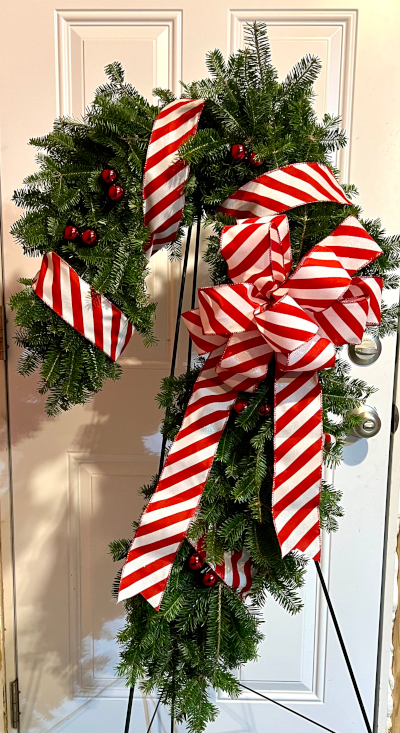
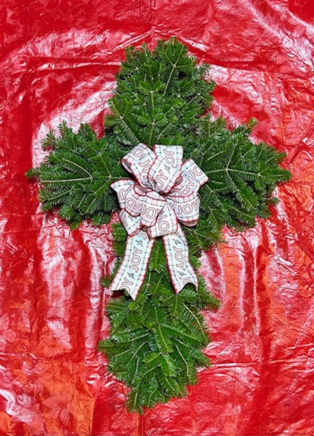
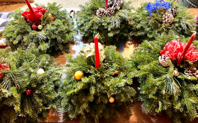
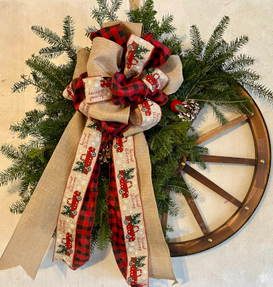

Balsam fir boughs, with their rich green color and fresh, fragrant scent, are a timeless favorite for creating beautiful holiday decorations. These versatile branches can be crafted into a variety of specialty items that bring warmth and festive cheer to any decor. From elegant centerpieces and rustic wagon wheels to whimsical candy cane wreaths and symbolic crosses, balsam fir adds a natural, earthy touch to holiday decor. For a nostalgic flair, miniature vintage black pickup trucks and charming little red wagons filled with fir boughs make for delightful, seasonal accents. Whether used to symbolize faith, celebrate tradition, or capture the spirit of the season, these handcrafted pieces are sure to enhance any holiday setting.
Picture a charming old-fashioned Christmas arrangement featuring a vintage black pickup truck with an open bed filled with lush balsam fir branches. The braches spill out slightly from the truck bed, adding a touch of natural fullness while the deep green needles contrast beautifully against the truck's dark exterior. Nestled among the greenery are vibrant red poinsettias, their petals adding a pop of festive color. Scattered throughout the boughs are rustic pinecones, their earthy texture giving the scene a cozy, wintery feel.
At the front of the truck, nestled just behind the cab, is a handcrafted bow made from a beige fabric ribbon. The ribbon is adorned with subtle black trucks, giving it a unique and complementary touch. The entire scene radiates a rustic, holiday spirit, evoking warmth and nostalgia.

This holiday decoration features a cheerful little red wagon overflowing with fragrant balsam fir boughs. The vibrant green needles spill from the wagon's bed, creating a lush and inviting holiday centerpiece. Nestled among the branches are bright red berries and pinecones for a natural, wintry touch.
Perched on top is a large bow with a festive red-and-black plaid design, giving the arrangement a rustic charm. This nostalgic piece evokes warm childhood memories and brings a sense of joy to any room.

Shaped like a candy cane, this wreath brings a sweet twist to traditional holiday decor. Handcrafted with fresh balsam fir, the wreath’s curve is accentuated by red ribbon wrapped diagonally across the greenery to mimic the classic candy cane stripes.
Accents like white berries, pinecones, and a coordinating red-and-white bow add festive charm. It’s a playful yet elegant decoration perfect for doors or entryways.

Symbolic and heartfelt, this cross-shaped decoration is crafted entirely from fragrant balsam fir boughs. The shape is carefully formed and bound, maintaining clean lines and a full, even texture.
Adorned with a rich burgundy bow and gold ribbon, this piece conveys a message of peace and remembrance, making it a meaningful addition to holiday traditions.

This elegant holiday centerpiece features a lush arrangement of balsam fir, accented with white pine and cedar. Pinecones and red berries are nestled within the branches for a classic holiday look.
A festive bow with gold accents adds a touch of sparkle. Designed for tabletops or mantels, this arrangement brings the beauty of the forest indoors during the holiday season.

For a rustic touch, this unique piece features a decorative wagon wheel embellished with fresh balsam fir. The greenery is artfully placed to highlight the wheel’s structure without overpowering it.
Accents like pinecones, berries, and a bold red bow complete the look. Perfect for farmhouse or country-style decor, it’s a creative way to celebrate the season with natural charm.
